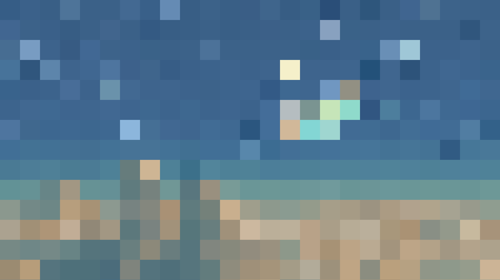

Atom
Logo
.logoSmall and large brand marks built from the shared spacing scale.
System reference
Foundations, reusable components and page patterns are documented here with their real tokens, states and responsive behavior.
Foundations
Every custom property is read directly from tokens.css. Select a row to copy its token name.
Token rules could not be read. Open this page through the local server or GitHub Pages.
Atomic Design / 01
Small, indivisible controls and visual primitives.
.logoSmall and large brand marks built from the shared spacing scale.
svg useStroke icons use --stroke-thin and inherit currentColor.
type tokensThe SF Mono scale covers display, message and interface roles.
.back-buttonShared glass shell, fixed geometry and browser-history behavior.
.chipCompact navigation chips with current, hover and pressed states.
.menu-btnClosed 32px control and 76px expanded control.
.message-action24px icon controls with subtle hover and press feedback.
.project-card__tagImage-generation progress and completion states.
Atomic Design / 02
Small groups of atoms with one clear job.
.site-identityName and version control using the shared identity typography.
.token-counterPersistent experience counter. Static in this documentation.
.chat-bubbleShared prefix, label and suffix anatomy with intrinsic multiline wrapping.
.message-actionsAlways 24px below message content; timestamp follows correction.
.suggestionFull-width prompt row with line reveal, arrow cascade and Leet replay.
Atomic Design / 03
Complete reusable interface regions.
.top-bar--conversationFixed Back atom left; intrinsic question bubble grows from right to left.
.messageBody, incremental reveal and Message Actions are scoped to one response.
.suggestionsDive deeper
The title sits 12px above rows; the organism sits 40px below Message Actions.
.project-card


Small, medium, large and split variants share image reveal and progress behavior.
Live shellThe preview uses the production shell and interactions with token spending disabled.
Atomic Design / 04
Layout contracts before page-specific content.
Hero content starts 112px below the shell topbar.
Shared structure for every page outside Home.
Atomic Design / 05
Production compositions with real content and behavior.
No tokens or components match this search.